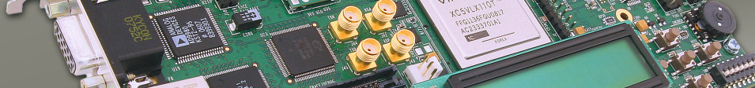

Lectures
Assignments
Syllabus
CPE 355 - Real Time Embedded Kernels - Spring 2012

Instructor:
Prof. Nuno Alves
Meeting Times: TR 11:00 am to 12:20 pm @ Sleith-301
Office Hours: TR 1:00pm to 2:00pm @ Sleith-313
Lectures
Topic 1: Background
Digital logic and information representation review
Hardware fundamentals for the software engineer
Advanced hardware fundamentals
Introduction to interrupts
Topic 2: Programming foundations (Arduino & C)
Arduino and basic C review
Interrupts in Arduino
Pointers, arrays and function pointers
Structs, linked lists, stacks and queues
[
source
]
Bitwise operators, Macros and Enumeration
Very basic introduction to arduino timers
Literal constants, extern, typedef, call-back functions and macros
Topic 3: Foundations of real-time systems
Survey of software architectures: round-robin
Survey of software architectures: queues and RTOS
Topic 4: Features of real-time operating systems
Tasks, task data and reentrant functions
Semaphores and shared data
Message queues, mailboxes and pipes
Timer functions
Events and memory management
Basic design using a real-time operating system
Topic 5: Practical system implementations in Arduino